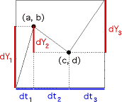
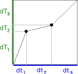
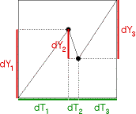

| Common market experience includes the observation that slow
changes are intermingled with very rapid changes. |
| The idea underlying trading time is to compress
the time scale of slow changes and expand the time scale of rapid changes. |
| An alternative
name could be VCR time: fast-forward through the commercials
(where nothing interesting is happening), then study a particularly
fast tennis shot in slow-motion. |
| Our goal is to find a variable
adjustment to the time scale, to compress the slow changes and
expand the rapid changes into graphs of about the same roughness. |
| How can this be accomplished? There are stree steps. |
|  |
First, we compute the price and clock time increments
dY1, dY2, dY3, dt1, dt2,
and dt3. |
|  |
Second, we compute the trading time increments
dT1, dT2, and dT3. |
|  |
Third, we build the price vs trading time generator. |
|